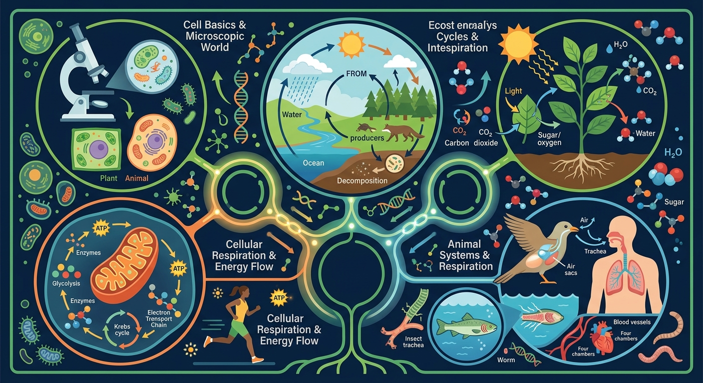

🎯 能说出体循环和肺循环的路径及功能
🎯 能判断动脉、静脉和毛细血管的结构特点
🎯 能分析运动时心率变化的生理意义
心脏每天跳动10万次，推动血液走完全身一圈只需要23秒
关键：体循环送氧到全身，肺循环回肺换气。两条路同时运行，永不停歇！
❓ 为什么我运动时心跳会加快？
❓ 血液在血管里怎么知道往哪流？
❓ 贫血是不是血管里的血变少了？
学完这一课，这些问题你都能自信地回答。
下列关于动脉和静脉的说法，正确的是？
调节心率滑块，观察血液（红色粒子=含氧，蓝色粒子=缺氧）在体循环和肺循环中的流动。点击不同位置查看气体交换详情。
设计一个实验，探究不同运动强度对心率的影响。
心脏四个腔中，壁最厚的是？
某人上肢静脉注射药物治疗肺部感染。药物到达肺部的最短路径经过心脏的哪些腔？
一氧化碳中毒（煤气中毒）时，CO与血红蛋白结合的能力是O₂的200倍。这会导致——
用管道模型展示心脏四腔室与血管连接方式
血红蛋白在氧浓度高处结合、低处释放的特性
动脉血流速快压力大 vs 静脉血流速慢有瓣膜
动画演示红细胞在毛细血管网的单列通过现象
解释高原反应与红细胞增多的适应性关系
先独立作答，再点选项查看对错与错因。
马拉松比赛中，小明呼吸急促的主要原因是什么？
小明赛后肌肉酸痛，主要与哪种物质积累有关？
比赛中小明的心跳加快，主要是为了什么？
在马拉松比赛中，小明吸入的氧气通过____系统进入血液。
答案：呼吸
氧气通过呼吸系统进入肺泡，再扩散进入血液。
血液中的二氧化碳通过____排出体外。
答案：呼吸
二氧化碳通过血液循环到达肺部，再通过呼吸排出。
✅ 肺动脉流静脉血，肺静脉流动脉血
💡 将血管命名依据与血液性质混淆
✅ 毛细血管仅允许红细胞单行通过
💡 忽视结构与功能适应性
口诀：左动右静，房连静室连动，瓣膜把关不倒流
类比：心脏像水泵，血管像水管网络，红细胞像快递小哥
💡 联系氧气运输与气体扩散。
外链：https://phet.colorado.edu/sims/html/gas-properties/latest/gas-properties_zh_CN.html
开放任务：用三步写出你如何向同学讲清「循环与呼吸综合」。